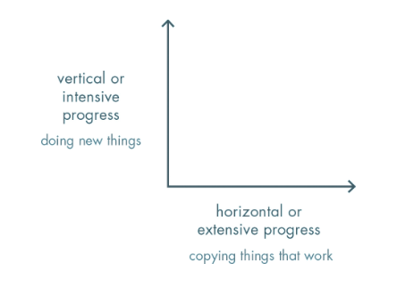

Ferry's Library
Buku #6
Zero To One
By : Peter Thiel

Meniru tentu saja lebih mudah daripada membuat sesuatu yang baru. Namun, Apabila anda mau dan yakin untuk menciptakan sesuatu yang baru, kesuksesan ada ditangan anda.
Dengan membaca buku ini, anda akan diberi pemahaman bagaimana membangun perusahaan rintisan atau Startup yang baik, sukses, dan berkembang. Buku ini juga memberikan pandangan bahwa dalam mendirikan sebuah perusahaan rintisan atau Startup, anda seharusnya berangkat dari 0 ke 1, dimana anda menciptakan sesuatu yang sebelumnya tidak ada menjadi ada.
Tantangan Masa Depan
Masa depan akan selalu berubah. Dalam menghadapinya, kita perlu menciptakan kemajuan. Kemajuan dibagi menjadi 2, yaitu kemajuan horizontal dan vertikal.

Di era sekarang, kemajuan sering kali didominasi oleh kemajuan horizontal, dimana kemajuan yang dihasilkan merupakan pengembangan dari hasil yang sudah ada. Padahal, kemajuan vertikal sangatlah penting, dimana kemajuan yang dihasilkan merupakan ide, sistem, dan konsep yang baru.
Kompetisi vs Monopoli
Kompetisi merupakan bentuk persaingan satu bisnis dengan bisnis yang lain. Sedangkan, monopoli merupakan bentuk penguasaan pasar karena produk/jasa yang ditawarkan bisnis tersebut unik dan berbeda sehingga tidak ada persaingan disana.
Sering kali kita dididik untuk bisa bersaing dengan lawan kita. Padahal, persaingan sama seperti peperangan. Disisi lain, monopoli tidak bekerja seperti itu. Penguasaan terhadap pasar menjadikan bisnis tanpa didasari persaingan dan peperangan. Monopoli pasar terbentuk atas dasar keunikan dan perbedaan produk/jasa yang dimiliki suatu bisnis apabila dibandingkan dengan bisnis yang lain.
Membangun Bisnis ≠ Mendapat Kupon Undian
Sering kali kita hanya menunggu peluang/kesempatan jika ingin memulai sesuatu, khususnya bisnis. Padahal, kitalah yang seharusnya membuat kesempatan itu. Dalam membangun fondasi bisnis kita memerlukan kerja keras dan dedikasi yang tinggi. Selain itu, kita juga perlu membuat rencana dan rancangan secara jelas dalam menghadapi dunia yang tidak pasti.
Eksistensi Rahasia Masih Ada
Kerap kali, kita menganggap bahwa setiap rahasia dunia sudah terungkap. Kita merasa sudah puas akan hal itu. Namun, kebenaran sesungguhnya adalah masih banyak rahasia yang belum terungkap. Teruslah gali dan gali.
Fondasi Perusahaan
Hukum Thiel menyatakan "usaha startup yang bagian dasarnya kacau tidak dapat dibenahi". Setiap permasalahan dan kegagalan biasanya berawal dari fondasinya, seperti memilih rekan bisnis, perencanaan sistem kerja, menentukan visi misi, dsb. Untuk itu, diperlukan pembagian sususan peranan dalam sebuah perusahaan.
- Pemilik ( Owner ) : Siapa yang memiliki ekuitas perusahaan
- Pengelola ( Director ) : Siapa yang mengelola dan mengurus perusahaan
- Pengawas ( Commissioner ) : Siapa yang melakukan pengawasan dan membuat keputusan.
Perekruitan Karyawan
- Dalam memberikan insentif kepada karyawan, bonus tunai lebih baik daripada gaji tunai. Hal ini karena gaji tunai hanya mendorong karyawan dalam jangka pendek. Sedangkan, bonus tunai dapat mendorong karyawan dalam jangka panjang, atas dasar pelaksanaan pekerjaan yang terlaksana dengan baik. Sehingga karyawan pun akan lebih terdorong untuk bekerja atas dasar kontribusi terhadap perusahaan, bukan hanya keinginan mendapatkan insentif saja.
- Pada startup, pemberian insentif dalam bentuk ekuitas lebih baik daripada sekedar uang. Hal ini karena ekuitas dapat memberikan komitmen kepada penerima dalam meningkatkan dan mengembangkan perusahaan.
- Carilah karyawan yang memiliki visi dan tujuan yang sejalan dengan perusahaan.
- Setiap karyawan sebaiknya dibedakan berdasarkan pekerjaan dan keahliannya. Buatlah karyawan mengerjakan satu hal saja, hal ini dilakukan agar karyawan dapat fokus serta dapat membuahkan hasil yang maksimal.
Pemasaran Juga Penting
Sering kali kita hanya mengembangkan kualitas produk/jasa dari dalam. Namun, ada satu hal yang sering kali terlupakan, yakni pemasaran. Pemasaran juga merupakan aspek yang cukup penting. Tanpa pemasaran, tidak akan ada yang tahu seberapa baik produk/jasa anda
Mesin vs Manusia
Di era berkembangnya teknologi sekarang ini, muncul 1 pertanyaan di benak setiap orang. " Apakah mesin dan teknologi akan menggantikan manusia? ". Hal ini tidak perlu dicemaskan. Karena pada dasarnya, teknologi dan mesin ada untuk melengkapi ketidaksempurnaan manusia, bukan untuk menggantikan manusia itu sendiri.
Konklusi
1. Jadilah Yang Paling Beda
2. Bangun Fondasi Perusahaan Yang Kuat ( Temukan CO-FOUNDER yang sesuai, rekruit karyawan yang sevisi, dsb )
3. Fokus Pada Produksi dan Pemasaran